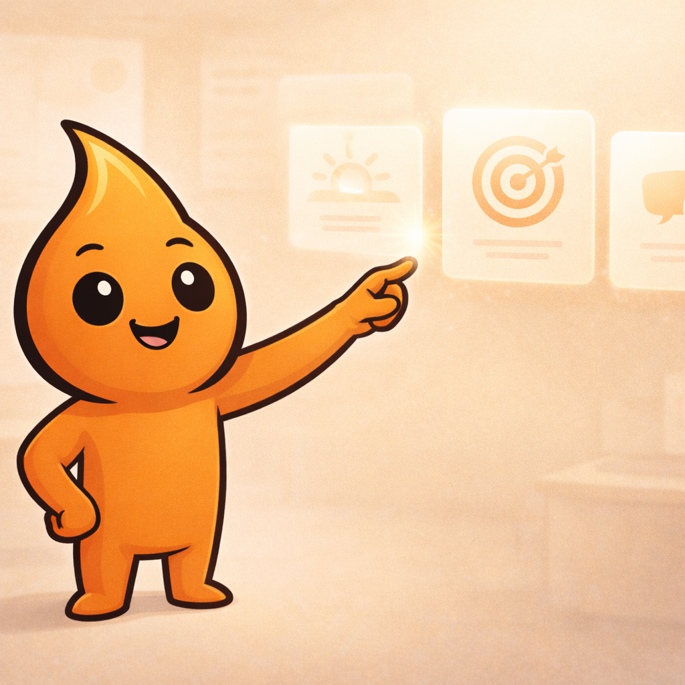
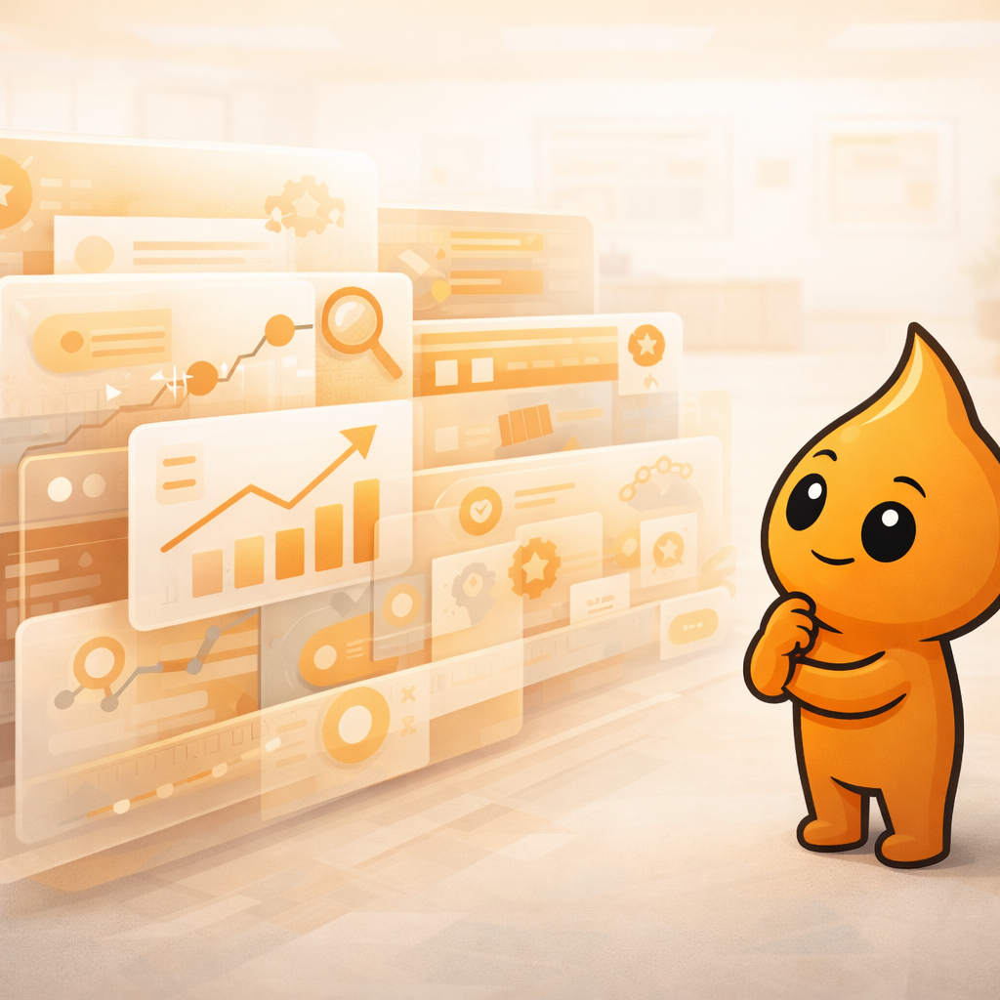
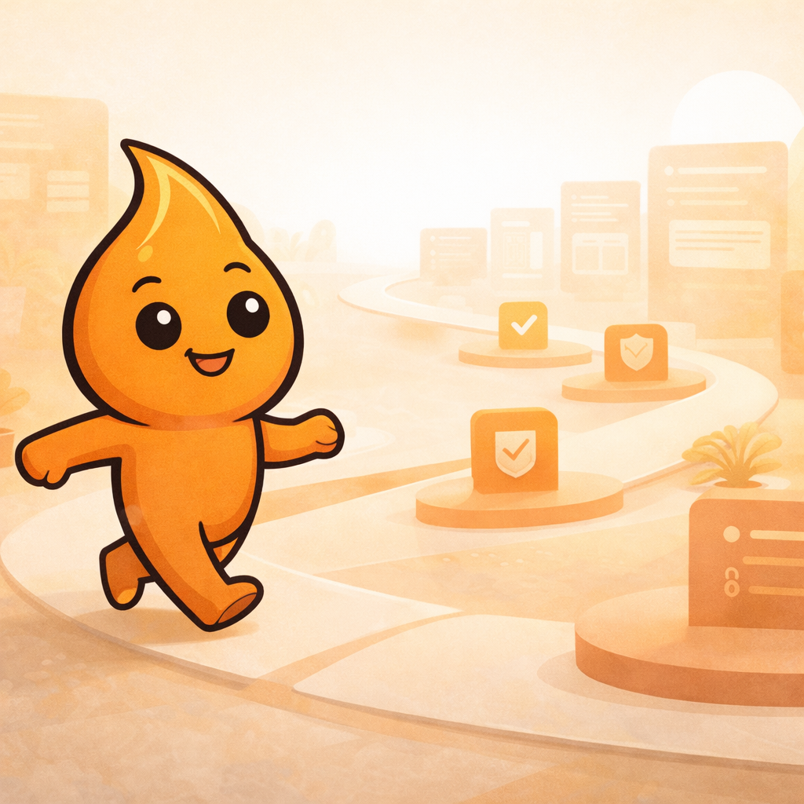

Foi feito para equipe, parceiros, operação e pessoas que passam a atuar perto do Bóris.
Manual institucional e cultural
Este material reúne o essencial para entender o Bóris e trabalhar com contexto.
O Bóris nasceu para transformar conversas em inteligência, reduzir ruído operacional e ajudar pessoas e operações a enxergarem melhor o que está acontecendo dentro dos grupos.
Quem entra aqui deve entender o projeto, o momento atual e a forma certa de contribuir.
O Bóris ainda está evoluindo, mas já tem base de produto, visão e direção suficientes para operar com clareza.
Resumo
Ecossistema Bóris
O Bóris é um sistema de inteligência sobre conversas em grupos e operações no WhatsApp.
Este manual deixa claro o que o Bóris é, por que ele importa, em que estágio o projeto está e como entrar para somar sem perder contexto.
Já existe uma leitura clara de problema, produto e frentes prioritárias.
O foco é amadurecer consistência sem perder velocidade nem utilidade prática.
O que é o Bóris
O Bóris é um sistema de inteligência sobre conversas.
Ele atua em grupos e operações no WhatsApp para ler conversas, entender contexto, organizar informação e ajudar pessoas a tomar decisões melhores.
Inteligência aplicada a grupos e operações no WhatsApp
- lê conversas e entende contexto
- organiza informação que normalmente se perde
- gera resumos, sinais e leitura operacional
- apoia decisão para admins, equipes e operações
Nem só bot, nem só painel, nem só automação
- não existe para falar demais no grupo
- não existe para gerar dashboard sem função prática
- não substitui leitura humana por automatismo vazio
- não é uma IA genérica desconectada da operação
Entende o que está acontecendo
Ajuda a sair do volume bruto e chegar em contexto acionável.
Estrutura o que importa
Transforma conversa, recorrência e sinal em algo que a operação consegue usar.
Apoia quem precisa agir
Serve para admins, operadores, parceiros e lideranças que precisam enxergar melhor.
Por que o Bóris existe
O problema não é falta de conversa. É falta de leitura sobre a conversa.
Grupos geram valor, relacionamento e operação. Mas também geram excesso de mensagem, perda de contexto e decisão sem base confiável.
Informação importante se perde no fluxo e a operação passa a decidir no escuro.
- mensagem demais quebra contexto
- insight importante some no histórico
- acompanhar tudo manualmente custa energia
- decisão vira sensação em vez de leitura
Excesso de mensagens
Volume alto faz o que importa disputar atenção com o que é só movimento.
Perda de continuidade
Quem chega depois precisa reconstruir manualmente o que aconteceu.
Decisão sem base confiável
Sem leitura clara, admin, operação e liderança trabalham mais no feeling.
Conhecimento que não vira ativo
Desejos, objeções, padrões e aprendizados passam, mas não se acumulam.
O Bóris nasce para organizar esse caos
O projeto existe para transformar conversa em algo útil, legível e acionável.
Reduzir ruído sem reduzir humanidade
O papel do Bóris é apoiar pessoas e operações, não substituir relação humana por automação vazia.
Mais clareza para acompanhar e agir
Quando a conversa vira inteligência, a operação deixa de reagir no escuro.
Base de decisão do projeto
Esses são os princípios que orientam o Bóris hoje.
Eles ajudam a decidir o que entra, o que não entra e como produto, operação e comunicação devem caminhar juntos.

Experiência acima de promessa
O produto precisa ser bom no uso real, não só parecer bom na explicação.
Clareza acima de volume
Mais informação só vale quando melhora leitura, priorização e decisão.
Automação com utilidade real
O Bóris não pode virar fonte adicional de ruído ou atividade vazia.
Inteligência aplicada ao cotidiano
O valor aparece quando a tecnologia melhora a rotina concreta de quem opera.
Crescimento com consistência
O projeto precisa amadurecer sem abrir mão de clareza, confiança e leitura compartilhada.
Tecnologia com função prática
IA, automação e painel só fazem sentido quando resolvem problema real de operação.
Definição do produto hoje
O Bóris já tem base clara, mas ainda está em consolidação.
A leitura certa neste momento é simples: já existe fundamento real, mas ainda com evolução importante em andamento.

O problema está claro, a tese de valor existe e a visão de produto já está definida.
O Bóris já sabe o tipo de caos que quer organizar e para quem isso importa.
O momento atual pede mais amarração entre o que é construído, dito e operado.
Não é protótipo solto, mas também não é um produto acabado para sempre.
Como entender hoje
Quem entra agora deve olhar o Bóris como um produto com base real, utilidade clara e bastante espaço para amadurecer com consistência.
O que o Bóris entrega na prática
O valor do Bóris aparece quando a conversa vira leitura útil para a operação.
Estas são entregas concretas que ajudam admins, operação, parceiros e responsáveis por grupos a enxergar melhor o que está acontecendo.
Resumo do dia
Síntese do que mais importou em um período sem depender de leitura manual integral.
Principais tópicos
Leitura dos assuntos que dominaram a conversa e merecem atenção.
Dores, desejos e objeções
Recorrências que ajudam produto, conteúdo, comercial e operação a aprender com a base.
Palavras-chave e padrões
Sinais que ajudam a entender contexto, recorrência e mudança de comportamento.
Membros mais ativos
Leitura de protagonismo, participação e pontos de influência dentro do grupo.
Horários de pico
Ajuda a ver ritmo de operação, janelas de atenção e comportamento da comunidade.
Alertas e sinais relevantes
Ajuda a perceber mudança de clima, risco, silêncio ou movimentações importantes.
Inteligência para tomada de decisão
O valor final não é o dado em si, mas a clareza que ele devolve para quem precisa agir.
Frentes atuais do projeto
O Bóris avança por frentes complementares, não por tarefas soltas.
Cada frente tem uma função clara, um estágio atual e um motivo prático para existir.
Produto
Base pronta
Produto
Objetivo: definir o que o Bóris resolve e como deve evoluir.
Importa porque: sem leitura de produto, o projeto perde foco.
Abrir módulo
Comercial
Em estruturação
Comercial
Objetivo: transformar interesse em conversa qualificada e avanço real.
Importa porque: o projeto precisa converter valor percebido em tração.
Abrir módulo
Conteúdo
Em consolidação
Conteúdo
Objetivo: transformar dores reais em narrativa, materiais e presença pública coerente.
Importa porque: o Bóris precisa ser entendido com clareza por dentro e por fora.
Abrir módulo
Operações
Base pronta
Operações
Objetivo: sustentar continuidade, registro e execução do que foi combinado.
Importa porque: sem operação legível, o projeto depende demais de memória oral.
Abrir móduloComo o trabalho está organizado
Entrar no Bóris é entender um sistema de trabalho, não só uma lista de tarefas.
O projeto depende de frentes diferentes que se reforçam entre si.
Define direção e priorização
Cuida da tese do Bóris, da leitura de problema e das prioridades de construção.
Sustenta continuidade
Garante que contexto, combinados e entregas não fiquem presos em conversa solta.
Converte interesse em avanço real
Organiza relacionamento, follow-up, reunião e proposta de valor.
Amplia a rede certa
Parcerias e vínculos institucionais ajudam o Bóris a ganhar presença e oportunidade.
Transforma tese em produto utilizável
É a camada que faz leitura, interface e operação funcionarem de verdade.
Contexto antes de ação
Ninguém deveria pegar uma frente relevante sem entender o que já foi pensado, testado ou decidido.
Registro antes de esquecimento
Se algo é importante para o projeto, isso precisa virar material recuperável e não ficar só em conversa.
Autonomia com alinhamento
A expectativa não é pedir permissão para tudo, mas também não é tocar tema sensível no escuro.
Onde o contexto do time vive
É onde documentação, histórico e materiais de trabalho precisam continuar acessíveis.
Camada pública
Serve para presença institucional e comercial, não para guardar este manual nem a operação interna.
Camada de produto
É onde o Bóris aparece como sistema em operação e leitura aplicada.
Equipe hoje
O time ainda é enxuto e bastante coisa passa por alinhamento direto.
Hoje, visão, operação e evolução ainda dependem de coordenação próxima.
Mateus Rocha
Direção, produto e condução geral do Bóris
Hoje o Mateus segura a visão do projeto, a barra de produto e a amarração entre as frentes.

Rodrigo Richter
Gamificação e possibilidades futuras
Rodrigo contribui especialmente nas conversas sobre engajamento e caminhos futuros do produto.

Camila Meireles
Divulgação, aquisição e presença comercial
Camila apoia o Bóris nas frentes de landing pages, ads, divulgação e aquisição.
Jezilene
Aprendizado em IA e apoio na construção do Bóris
Jezilene está entrando para aprender IA e contribuir com a construção do projeto.
Mateus Rocha
Quando a dúvida envolve direção do projeto, prioridade entre frentes ou uma decisão sensível, a referência principal continua sendo o Mateus.
Rodrigo Richter
Acione o Rodrigo quando a conversa estiver ligada a gamificação, engajamento e possibilidades futuras.
Camila Meireles
Acione a Camila quando o tema envolver divulgação, materiais, landing pages, ads ou aquisição.
Jezilene
Acione a Jezilene nas frentes em que ela estiver entrando para aprender e apoiar a construção do Bóris.
O que esperamos de quem entra
Contribuir bem no Bóris começa por entender o contexto antes de agir.
A entrada ideal é a de quem entende o momento, assume o que pega e ajuda o projeto a ganhar clareza.
Entender o contexto antes de agir
Antes de propor ou executar, vale entender o que já existe, o que está em jogo e onde a frente se conecta ao resto.
Assumir responsabilidade pelo que pega
Se algo entrou no seu escopo, a expectativa é conduzir com clareza e não deixar se perder no caminho.
Comunicar com clareza
Progresso, bloqueio e próximo passo continuam sendo o formato mais útil para atualizar o time.
Respeitar a fase atual do projeto
O Bóris já tem base, mas ainda está amadurecendo. Isso pede pragmatismo e menos fantasia de estrutura pronta.
Contribuir com visão prática
A boa contribuição aqui aproxima o projeto do uso real, da clareza e da continuidade.
Ter autonomia com alinhamento
É esperado avançar, mas sem tocar tema sensível sem contexto suficiente ou alinhamento mínimo.
Visão de futuro
O Bóris está sendo construído como um ecossistema de inteligência para conversas e operações.
A ambição não é só entregar uma ferramenta. É criar uma camada de leitura e organização que ajude grupos e operações a funcionar melhor em escala.

O Bóris pode se tornar uma camada de inteligência prática sobre o que acontece dentro de grupos.
Quando conversa vira contexto confiável, operação, conteúdo, produto e relacionamento passam a decidir melhor.
Fazer produto, operação, narrativa e aquisição andarem com mais consistência.
O próximo salto do Bóris depende de mais integração entre as frentes que já existem.
Definir problema e direção
O projeto saiu da ideia solta e ganhou tese de produto, identidade e organização inicial.
Consolidar o que já existe
O foco atual é transformar base real em operação mais forte, mais legível e mais confiável.
Ganhar tração com clareza
Melhorar produto, comunicação, aquisição e percepção de valor sem perder função prática.
Virar infraestrutura de leitura
O Bóris pode se tornar referência para quem depende de grupos e precisa enxergar melhor o que acontece neles.